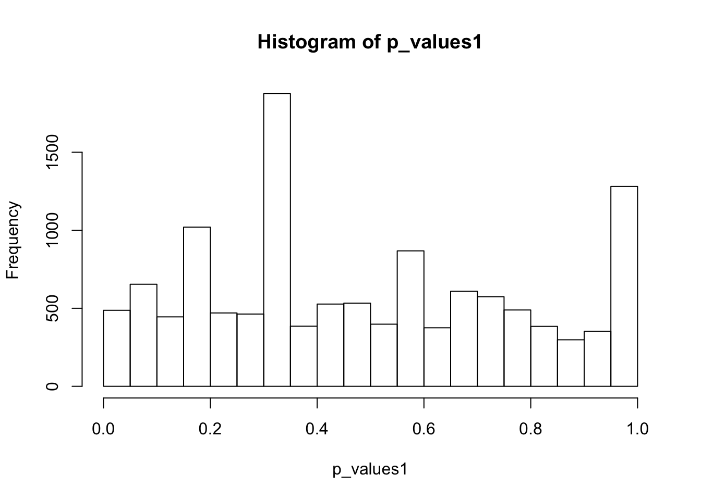
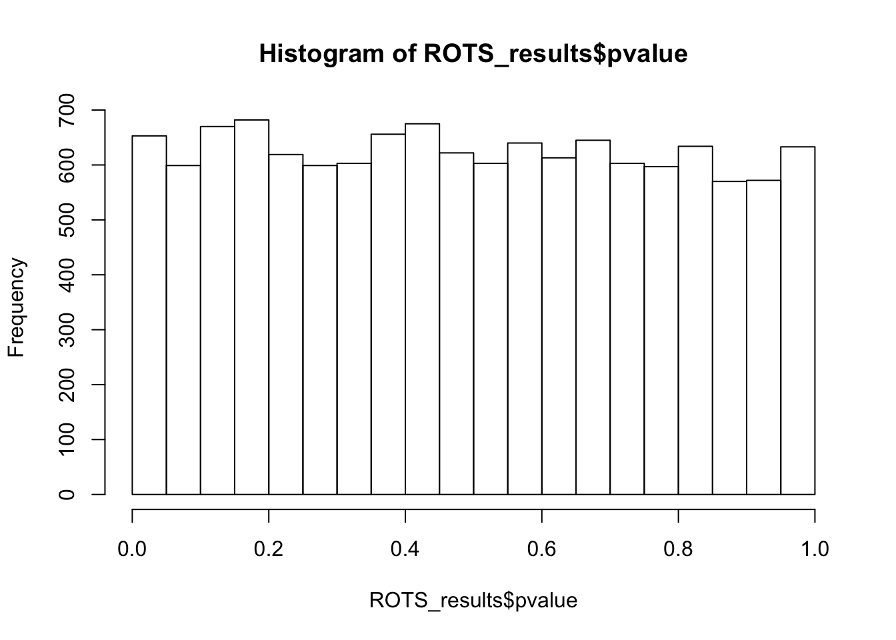
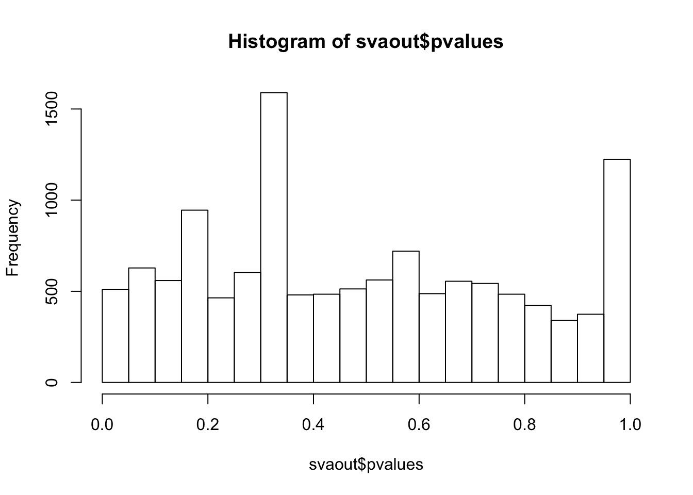
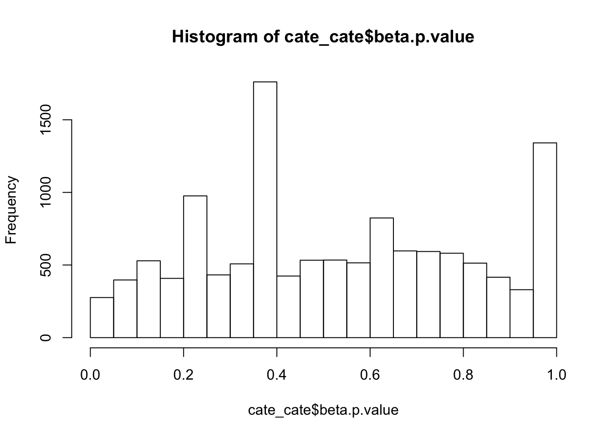
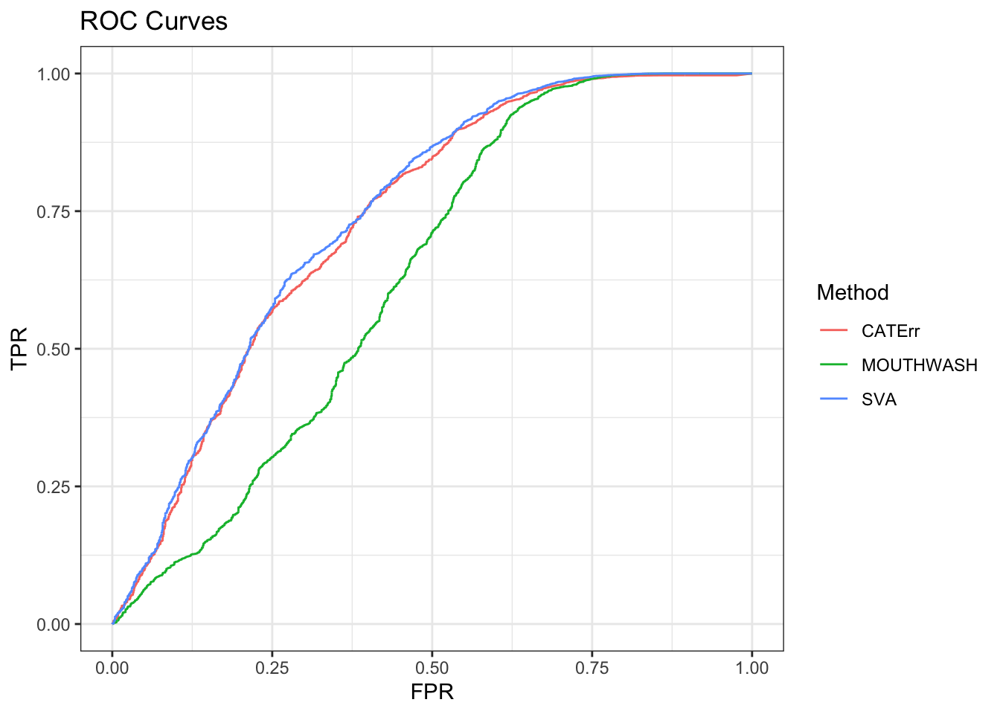
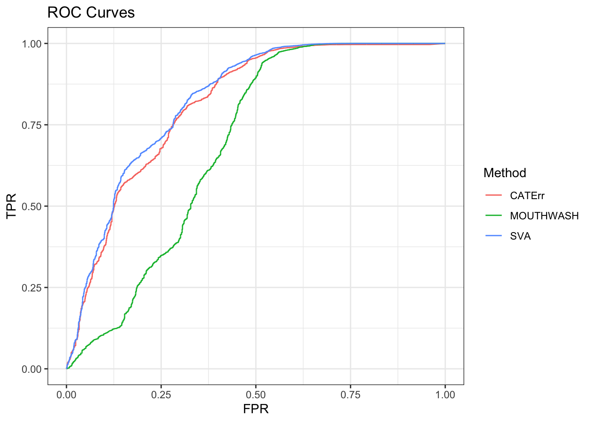

Last updated: 2020-02-28
Checks: 7 0
Knit directory: misc/
This reproducible R Markdown analysis was created with workflowr (version 1.5.0). The Checks tab describes the reproducibility checks that were applied when the results were created. The Past versions tab lists the development history.
Great! Since the R Markdown file has been committed to the Git repository, you know the exact version of the code that produced these results.
Great job! The global environment was empty. Objects defined in the global environment can affect the analysis in your R Markdown file in unknown ways. For reproduciblity it’s best to always run the code in an empty environment.
The command set.seed(20191122) was run prior to running the code in the R Markdown file. Setting a seed ensures that any results that rely on randomness, e.g. subsampling or permutations, are reproducible.
Great job! Recording the operating system, R version, and package versions is critical for reproducibility.
Nice! There were no cached chunks for this analysis, so you can be confident that you successfully produced the results during this run.
Great job! Using relative paths to the files within your workflowr project makes it easier to run your code on other machines.
Great! You are using Git for version control. Tracking code development and connecting the code version to the results is critical for reproducibility. The version displayed above was the version of the Git repository at the time these results were generated.
Note that you need to be careful to ensure that all relevant files for the analysis have been committed to Git prior to generating the results (you can use wflow_publish or wflow_git_commit). workflowr only checks the R Markdown file, but you know if there are other scripts or data files that it depends on. Below is the status of the Git repository when the results were generated:
Ignored files:
Ignored: .DS_Store
Ignored: .Rhistory
Ignored: .Rproj.user/
Untracked files:
Untracked: data/ROTS_results.RData
Untracked: data/ROTS_results2.RData
Untracked: data/cate_cate_high.RData
Untracked: data/cate_cate_low.RData
Untracked: data/cate_cate_mid.RData
Untracked: data/cate_cate_null.RData
Untracked: data/mout_high.RData
Untracked: data/mout_low.RData
Untracked: data/mout_mid.RData
Untracked: data/mout_null.RData
Untracked: data/pbmc.rds
Untracked: data/pbmc_counts.rds
Untracked: data/sva_sva_high.RData
Untracked: data/sva_sva_low.RData
Untracked: data/sva_sva_mid.RData
Untracked: data/sva_sva_null.RData
Unstaged changes:
Modified: analysis/deconvolution.Rmd
Modified: analysis/index.Rmd
Modified: analysis/scdePBMC.Rmd
Note that any generated files, e.g. HTML, png, CSS, etc., are not included in this status report because it is ok for generated content to have uncommitted changes.
These are the previous versions of the R Markdown and HTML files. If you’ve configured a remote Git repository (see ?wflow_git_remote), click on the hyperlinks in the table below to view them.
| File | Version | Author | Date | Message |
|---|---|---|---|---|
| Rmd | 327dcd2 | Dongyue Xie | 2020-02-28 | wflow_publish(“analysis/scdePBMC2.Rmd”) |
In my previous analysis, I tried RUV methods on single-cell RNA-Seq data. I only tried top 1000 expressed genes from the dataset. So only a few of gene expressions are 0. This is not what typically scRNA-Seq data are. Also, I tried only 50 cells.
This time, I’m going to try PBMC data prepared by Satjia Lab.
library(MAST)
library(Seurat)
datax = readRDS('data/pbmc_counts.rds')@assays$RNA
datax = datax[rowSums(datax)>0,]
clusters = readRDS('data/pbmc.rds')
cell_cluster = clusters@colData$seuratHow many zeros are there? A lot
sum(datax==0)/(dim(datax)[1]*dim(datax)[2])[1] 0.9381137Let’s only use the Naive CD4+ T cells, which corresponds to the first cluster. Total 709 cells.
CDT_idx = which(cell_cluster == 1)
CDT = datax[,CDT_idx]
set.seed(12345)
group1_idx = sample(1:ncol(CDT),ncol(CDT)/2)
group1 = CDT[,group1_idx]
group2 = CDT[,-group1_idx]
## for each gene, run a two-sample t test
p_values1 = c()
for(i in 1:nrow(CDT)){
p_values1[i] = t.test(log(group1[i,]+1),log(group2[i,]+1),alternative='two.sided')$p.value
}
hist(p_values1,breaks = 15)
summary(p_values1) Min. 1st Qu. Median Mean 3rd Qu. Max. NA's
0.0001 0.2539 0.4368 0.4842 0.7154 0.9997 1225 There are 1225 genes that have no expression in any Naive CD4+ T cells. Remove these genes.
CDT = CDT[-which((rowSums(CDT)==0)),]Again, t-test does not apply here since for a lot of genes, only one cell has non-zero read counts among two groups.
Now let’s apply ROTS method for scDE, which is one of the best performance method tested in Sonenson and Delorenzi.
# First Normalize the counts by Trimmed Mean of M-values as required by ROTS. Then apply ROTS.
group = rep(0,ncol(CDT))
group[group1_idx] = 1
library(ROTS)
#ROTS_results = ROTS(data = CDTnorm, groups = group , B = 100 , K = 500 , seed = 1234)
load('data/ROTS_results.RData')
summary(ROTS_results, fdr = 0.05)ROTS results:
Number of resamplings: 100
a1: 4.6
a2: 1
Top list size: 390
Reproducibility value: 0.1662051
Z-score: 5.651558
0 rows satisfy the condition.
Row ROTS-statistic pvalue FDRhist(ROTS_results$pvalue,breaks = 15)
First apply on NULL data then add signals to genes using Poisson thinning.
Randomly split 709 cells to two groups.
library(vicar)
set.seed(12345)
group1_idx = sample(1:ncol(CDT),ncol(CDT)/2)
group1 = CDT[,group1_idx]
group2 = CDT[,-group1_idx]
group_indicator = rep(0,ncol(CDT))
group_indicator[group1_idx] = 1
X = model.matrix(~group_indicator)
CDT = as.matrix(CDT)
Y = t((CDT))
#num_sv <- sva::num.sv(dat = t(Y), mod = X, method = "be")
#num_sv_l <- sva::num.sv(dat = t(Y), mod = X, method = "leek")
num_sv = 3
#num_sv_lThe number of estimated surrogate variables is 3.
eps=0.01
Y = log(Y+eps)
mout = mouthwash(Y,X,k=num_sv,cov_of_interest = 2,include_intercept = FALSE)Running mouthwash on 709 x 2 matrix X and 709 x 12488 matrix Y.
- Computing independent basis using QR decomposition.
- Computation took 23.891 seconds.
- Running additional preprocessing steps.
- Computation took 0.002 seconds.
- Running second step of mouthwash:
+ Estimating model parameters using EM.
+ Computation took 134.018 seconds.
+ Generating adaptive shrinkage (ash) output.
+ Computation took 1.46 seconds.
- Second step took 136.331 seconds.
- Estimating additional hidden confounders.
- Computation took 2.991 seconds.save(mout,file = 'data/mout_null.RData')
#load('data/mout_null.RData')
mout$pi0[1] 0.9991927library(cate)
#library(leapp)
cate_cate <- cate::cate.fit(X.primary = X[, 2, drop = FALSE], X.nuis = X[, -2, drop = FALSE],
Y = Y, r = num_sv, adj.method = "rr")
save(cate_cate,file = 'data/cate_cate_null.RData')
#load('data/cate_cate_null.RData')
# this method is vey slow!
#leapp_leapp <- leapp::leapp(data = t(Y), pred.prim = X[, 2, drop = FALSE],
# pred.covar = X[, -2, drop = FALSE], num.fac = num_sv)
sva_sva <- sva::sva(dat = t(Y), mod = X, mod0 = X[, -2, drop = FALSE], n.sv = num_sv)Number of significant surrogate variables is: 3
Iteration (out of 5 ):1 2 3 4 5 save(sva_sva,file = 'data/sva_sva_null.RData')
#load('data/sva_sva_null.RData')
X.sva <- cbind(X, sva_sva$sv)
lmout <- limma::lmFit(object = t(Y), design = X.sva)
eout <- limma::eBayes(lmout)
svaout <- list()
svaout$betahat <- lmout$coefficients[, 2]
svaout$sebetahat <- lmout$stdev.unscaled[, 2] * sqrt(eout$s2.post)
svaout$pvalues <- eout$p.value[, 2]
hist(svaout$pvalues,breaks=15)
ks.test(svaout$pvalues,'punif',0,1)
One-sample Kolmogorov-Smirnov test
data: svaout$pvalues
D = 0.074756, p-value < 2.2e-16
alternative hypothesis: two-sidedhist(cate_cate$beta.p.value,breaks = 15)
ks.test(cate_cate$beta.p.value,'punif',0,1)
One-sample Kolmogorov-Smirnov test
data: cate_cate$beta.p.value
D = 0.072026, p-value < 2.2e-16
alternative hypothesis: two-sidedAdd some signal to the NULL dataset.
library(seqgendiff)
#tt = thin_diff(round(cell16), design_fixed = X[,2,drop=FALSE])
set.seed(12345)
thinout = thin_2group(round(CDT),0.9,signal_fun = stats::rexp,signal_params = list(rate=0.5))
#check null groups
group1 = CDT[,which(thinout$designmat==1)]
group2 = CDT[,which(thinout$designmat==0)]
## for each gene, run a two-sample t test
#p_values1 = c()
#for(i in 1:nrow(CDT)){
# p_values1[i] = t.test(group1[i,],group2[i,],alternative='two.sided')$p.value
#}
#ks.test(p_values1,'punif',0,1)
#hist(p_values1,breaks = 15)
Y = t(thinout$mat)
remove.idx = which(colSums(Y)==0)
Y = log(Y[,-remove.idx]+eps)
X = model.matrix(~thinout$designmat)
#num_sv <- sva::num.sv(dat = t(Y), mod = X, method = "be")
#num_sv_l <- sva::num.sv(dat = t(Y), mod = X, method = "leek")
num_sv = 3
#num_sv_l
mean(abs(thinout$coef) < 10^-6)[1] 0.899984mout = mouthwash(Y,X,k=num_sv,cov_of_interest = 2,include_intercept = FALSE)Running mouthwash on 709 x 2 matrix X and 709 x 12446 matrix Y.
- Computing independent basis using QR decomposition.
- Computation took 22.124 seconds.
- Running additional preprocessing steps.
- Computation took 0 seconds.
- Running second step of mouthwash:
+ Estimating model parameters using EM.
+ Computation took 179.905 seconds.
+ Generating adaptive shrinkage (ash) output.
+ Computation took 1.419 seconds.
- Second step took 182.303 seconds.
- Estimating additional hidden confounders.
- Computation took 2.433 seconds.save(mout,file = 'data/mout_mid.RData')
mout$pi0[1] 0.9822051#load('data/mout_mid.RData')
#bout <- backwash(Y = Y, X = X, k = num_sv, cov_of_interest = 2, include_intercept = FALSE)
#save(bout,file = 'data/bout_mid.RData')
#bout$pi0
cate_cate = cate::cate.fit(X.primary = X[, 2, drop = FALSE], X.nuis = X[, -2, drop = FALSE],
Y = Y, r = num_sv, adj.method = "rr")
save(cate_cate,file = 'data/cate_cate_mid.RData')
#load('data/cate_cate_mid.RData')
sva_sva <- sva::sva(dat = t(Y), mod = X, mod0 = X[, -2, drop = FALSE], n.sv = num_sv)Number of significant surrogate variables is: 3
Iteration (out of 5 ):1 2 3 4 5 save(sva_sva,file = 'data/sva_sva_mid.RData')
#load('data/sva_sva_mid.RData')
X.sva <- cbind(X, sva_sva$sv)
lmout <- limma::lmFit(object = t(Y), design = X.sva)
eout <- limma::eBayes(lmout)
svaout <- list()
svaout$betahat <- lmout$coefficients[, 2]
svaout$sebetahat <- lmout$stdev.unscaled[, 2] * sqrt(eout$s2.post)
svaout$pvalues <- eout$p.value[, 2]
which_null = c(1*(abs(thinout$coef[-remove.idx]) < 10^-6))
# plot ROC curve
roc_out <- list(
pROC::roc(response = which_null, predictor = c(mout$result$lfdr)),
#pROC::roc(response = which_null, predictor = c(bout$result$lfdr)),
pROC::roc(response = which_null, predictor = c(cate_cate$beta.p.value)),
pROC::roc(response = which_null, predictor = c(svaout$pvalues)))
name_vec <- c("MOUTHWASH", "CATErr", "SVA")
names(roc_out) <- name_vec
sout <- lapply(roc_out, function(x) { data.frame(TPR = x$sensitivities, FPR = 1 - x$specificities)})
for (index in 1:length(sout)) {
sout[[index]]$Method <- name_vec[index]
}
longdat <- do.call(rbind, sout)
shortdat <- dplyr::filter(longdat, Method == "MOUTHWASH" |
Method == "CATErr" | Method == "SVA" | Method == "LEAPP")
library(ggplot2)
ggplot(data = shortdat, mapping = aes(x = FPR, y = TPR, col = Method)) +
geom_path() + theme_bw() + ggtitle("ROC Curves")
auc_vec <- sapply(roc_out, FUN = function(x) { x$auc })
knitr::kable(sort(auc_vec, decreasing = TRUE), col.names = "AUC", digits = 3)| AUC | |
|---|---|
| SVA | 0.743 |
| CATErr | 0.734 |
| MOUTHWASH | 0.630 |
# estimate pi0
method_list <- list()
method_list$CATErr <- list()
method_list$CATErr$betahat <- c(cate_cate$beta)
method_list$CATErr$sebetahat <- c(sqrt(cate_cate$beta.cov.row * c(cate_cate$beta.cov.col)) / sqrt(nrow(X)))
method_list$SVA <- list()
method_list$SVA$betahat <- c(svaout$betahat)
method_list$SVA$sebetahat <- c(svaout$sebetahat)
ashfit <- lapply(method_list, FUN = function(x) { ashr::ash(x$betahat, x$sebetahat)})
api0 <- sapply(ashfit, FUN = ashr::get_pi0)
api0 <- c(api0, MOUTHWASH = mout$pi0)
#api0 <- c(api0, BACKWASH = bout$pi0)
knitr::kable(sort(api0, decreasing = TRUE), col.names = "Estimate of Pi0")| Estimate of Pi0 | |
|---|---|
| MOUTHWASH | 0.9822051 |
| SVA | 0.9766238 |
| CATErr | 0.1653960 |
Stronger signal: rexp(,rate = 0.2)
set.seed(12345)
thinout = thin_2group(round(CDT),0.9,signal_fun = stats::rexp,signal_params = list(rate=0.2))
Y = t(thinout$mat)
remove.idx = which(colSums(Y)==0)
Y = log(Y[,-remove.idx]+eps)
X = model.matrix(~thinout$designmat)
mean(abs(thinout$coef) < 10^-6)[1] 0.899984mout = mouthwash(Y,X,k=num_sv,cov_of_interest = 2,include_intercept = FALSE)Running mouthwash on 709 x 2 matrix X and 709 x 12431 matrix Y.
- Computing independent basis using QR decomposition.
- Computation took 22.332 seconds.
- Running additional preprocessing steps.
- Computation took 0.001 seconds.
- Running second step of mouthwash:
+ Estimating model parameters using EM.
+ Computation took 178.899 seconds.
+ Generating adaptive shrinkage (ash) output.
+ Computation took 1.437 seconds.
- Second step took 181.393 seconds.
- Estimating additional hidden confounders.
- Computation took 2.378 seconds.save(mout,file = 'data/mout_high.RData')
mout$pi0[1] 0.9662333#bout <- backwash(Y = Y, X = X, k = num_sv, cov_of_interest = 2, include_intercept = FALSE)
#save(bout,file = 'data/bout_high.RData')
#bout$pi0
cate_cate = cate::cate.fit(X.primary = X[, 2, drop = FALSE], X.nuis = X[, -2, drop = FALSE],
Y = Y, r = num_sv, adj.method = "rr")
save(cate_cate,file = 'data/cate_cate_high.RData')
sva_sva <- sva::sva(dat = t(Y), mod = X, mod0 = X[, -2, drop = FALSE], n.sv = num_sv)Number of significant surrogate variables is: 3
Iteration (out of 5 ):1 2 3 4 5 save(sva_sva,file = 'data/sva_sva_high.RData')
X.sva <- cbind(X, sva_sva$sv)
lmout <- limma::lmFit(object = t(Y), design = X.sva)
eout <- limma::eBayes(lmout)
svaout <- list()
svaout$betahat <- lmout$coefficients[, 2]
svaout$sebetahat <- lmout$stdev.unscaled[, 2] * sqrt(eout$s2.post)
svaout$pvalues <- eout$p.value[, 2]
which_null = c(1*(abs(thinout$coef[-remove.idx]) < 10^-6))
roc_out <- list(
pROC::roc(response = which_null, predictor = c(mout$result$lfdr)),
#pROC::roc(response = which_null, predictor = c(bout$result$lfdr)),
pROC::roc(response = which_null, predictor = c(cate_cate$beta.p.value)),
pROC::roc(response = which_null, predictor = c(svaout$pvalues)))
name_vec <- c("MOUTHWASH", "CATErr", "SVA")
names(roc_out) <- name_vec
sout <- lapply(roc_out, function(x) { data.frame(TPR = x$sensitivities, FPR = 1 - x$specificities)})
for (index in 1:length(sout)) {
sout[[index]]$Method <- name_vec[index]
}
longdat <- do.call(rbind, sout)
shortdat <- dplyr::filter(longdat, Method == "MOUTHWASH" |
Method == "CATErr" | Method == "SVA" | Method == "LEAPP")
ggplot(data = shortdat, mapping = aes(x = FPR, y = TPR, col = Method)) +
geom_path() + theme_bw() + ggtitle("ROC Curves")
auc_vec <- sapply(roc_out, FUN = function(x) { x$auc })
knitr::kable(sort(auc_vec, decreasing = TRUE), col.names = "AUC", digits = 3)| AUC | |
|---|---|
| SVA | 0.827 |
| CATErr | 0.814 |
| MOUTHWASH | 0.685 |
method_list <- list()
method_list$CATErr <- list()
method_list$CATErr$betahat <- c(cate_cate$beta)
method_list$CATErr$sebetahat <- c(sqrt(cate_cate$beta.cov.row * c(cate_cate$beta.cov.col)) / sqrt(nrow(X)))
method_list$SVA <- list()
method_list$SVA$betahat <- c(svaout$betahat)
method_list$SVA$sebetahat <- c(svaout$sebetahat)
ashfit <- lapply(method_list, FUN = function(x) { ashr::ash(x$betahat, x$sebetahat)})
api0 <- sapply(ashfit, FUN = ashr::get_pi0)
api0 <- c(api0, MOUTHWASH = mout$pi0)
#api0 <- c(api0, BACKWASH = bout$pi0)
knitr::kable(sort(api0, decreasing = TRUE), col.names = "Estimate of Pi0")| Estimate of Pi0 | |
|---|---|
| MOUTHWASH | 0.9662333 |
| SVA | 0.4528195 |
| CATErr | 0.1373782 |
sessionInfo()R version 3.6.1 (2019-07-05)
Platform: x86_64-apple-darwin15.6.0 (64-bit)
Running under: macOS High Sierra 10.13.6
Matrix products: default
BLAS: /Library/Frameworks/R.framework/Versions/3.6/Resources/lib/libRblas.0.dylib
LAPACK: /Library/Frameworks/R.framework/Versions/3.6/Resources/lib/libRlapack.dylib
locale:
[1] en_US.UTF-8/en_US.UTF-8/en_US.UTF-8/C/en_US.UTF-8/en_US.UTF-8
attached base packages:
[1] parallel stats4 stats graphics grDevices utils datasets
[8] methods base
other attached packages:
[1] ggplot2_3.2.1 seqgendiff_1.1.1
[3] cate_1.1 vicar_0.1-10
[5] ROTS_1.12.0 Seurat_3.1.2
[7] MAST_1.10.0 SingleCellExperiment_1.6.0
[9] SummarizedExperiment_1.14.1 DelayedArray_0.10.0
[11] BiocParallel_1.18.1 matrixStats_0.55.0
[13] Biobase_2.44.0 GenomicRanges_1.36.1
[15] GenomeInfoDb_1.20.0 IRanges_2.18.3
[17] S4Vectors_0.22.1 BiocGenerics_0.30.0
loaded via a namespace (and not attached):
[1] reticulate_1.13 R.utils_2.9.0 tidyselect_0.2.5
[4] lme4_1.1-21 RSQLite_2.1.2 AnnotationDbi_1.46.1
[7] htmlwidgets_1.5.1 grid_3.6.1 Rtsne_0.15
[10] pROC_1.15.3 munsell_0.5.0 codetools_0.2-16
[13] mutoss_0.1-12 ica_1.0-2 future_1.15.1
[16] withr_2.1.2 colorspace_1.4-1 leapp_1.2
[19] highr_0.8 knitr_1.25 pscl_1.5.2
[22] ROCR_1.0-7 gbRd_0.4-11 listenv_0.8.0
[25] labeling_0.3 Rdpack_0.11-0 git2r_0.26.1
[28] GenomeInfoDbData_1.2.1 mixsqp_0.1-97 mnormt_1.5-5
[31] bit64_0.9-7 rprojroot_1.3-2 vctrs_0.2.0
[34] TH.data_1.0-10 xfun_0.10 R6_2.4.0
[37] doParallel_1.0.15 rsvd_1.0.2 bitops_1.0-6
[40] assertthat_0.2.1 promises_1.1.0 SDMTools_1.1-221.2
[43] scales_1.0.0 multcomp_1.4-12 gtable_0.3.0
[46] npsurv_0.4-0 globals_0.12.5 sva_3.32.1
[49] sandwich_2.5-1 svd_0.5 workflowr_1.5.0
[52] rlang_0.4.0 zeallot_0.1.0 genefilter_1.66.0
[55] splines_3.6.1 lazyeval_0.2.2 yaml_2.2.0
[58] reshape2_1.4.3 abind_1.4-5 backports_1.1.5
[61] httpuv_1.5.2 tools_3.6.1 gplots_3.0.1.1
[64] RColorBrewer_1.1-2 ggridges_0.5.2 TFisher_0.2.0
[67] Rcpp_1.0.2 plyr_1.8.4 zlibbioc_1.30.0
[70] purrr_0.3.2 RCurl_1.95-4.12 pbapply_1.4-2
[73] ashr_2.2-38 cowplot_1.0.0 zoo_1.8-6
[76] ggrepel_0.8.1 cluster_2.1.0 fs_1.3.1
[79] magrittr_1.5 data.table_1.12.6 lmtest_0.9-37
[82] RANN_2.6.1 truncnorm_1.0-8 mvtnorm_1.0-11
[85] SQUAREM_2017.10-1 whisker_0.4 fitdistrplus_1.0-14
[88] lsei_1.2-0 evaluate_0.14 xtable_1.8-4
[91] XML_3.98-1.20 gridExtra_2.3 compiler_3.6.1
[94] tibble_2.1.3 KernSmooth_2.23-15 crayon_1.3.4
[97] minqa_1.2.4 R.oo_1.23.0 htmltools_0.4.0
[100] mgcv_1.8-29 corpcor_1.6.9 later_1.0.0
[103] tidyr_1.0.0 RcppParallel_4.4.4 DBI_1.0.0
[106] MASS_7.3-51.4 boot_1.3-23 Matrix_1.2-17
[109] R.methodsS3_1.7.1 gdata_2.18.0 metap_1.2
[112] igraph_1.2.4.1 pkgconfig_2.0.3 sn_1.5-4
[115] numDeriv_2016.8-1.1 plotly_4.9.1 foreach_1.4.7
[118] annotate_1.62.0 blme_1.0-4 multtest_2.40.0
[121] XVector_0.24.0 ruv_0.9.7.1 bibtex_0.4.2
[124] stringr_1.4.0 digest_0.6.21 sctransform_0.2.1
[127] RcppAnnoy_0.0.13 tsne_0.1-3 rmarkdown_1.16
[130] leiden_0.3.1 uwot_0.1.5 gtools_3.8.1
[133] nloptr_1.2.1 lifecycle_0.1.0 nlme_3.1-141
[136] jsonlite_1.6 viridisLite_0.3.0 limma_3.40.6
[139] pillar_1.4.2 lattice_0.20-38 httr_1.4.1
[142] plotrix_3.7-7 survival_2.44-1.1 glue_1.3.1
[145] esaBcv_1.2.1 png_0.1-7 iterators_1.0.12
[148] bit_1.1-14 stringi_1.4.3 blob_1.2.0
[151] memoise_1.1.0 caTools_1.17.1.2 dplyr_0.8.3
[154] irlba_2.3.3 future.apply_1.4.0 ape_5.3